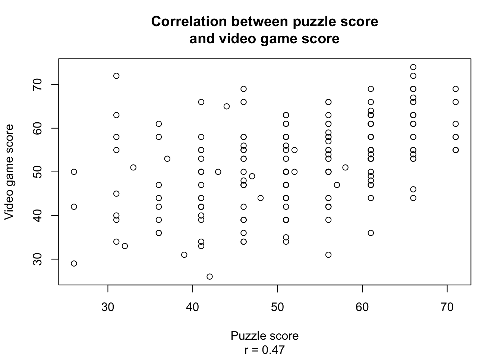
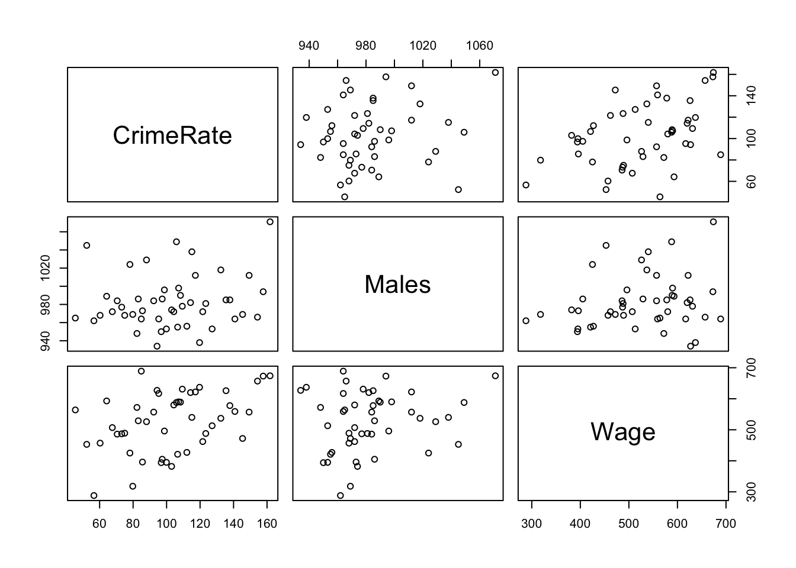
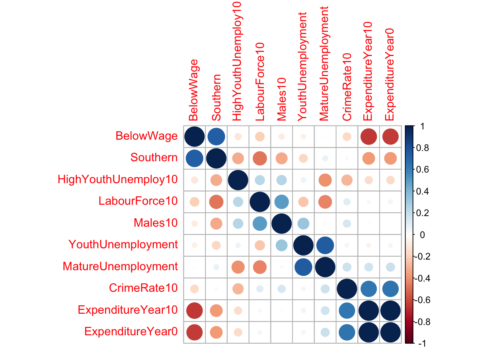
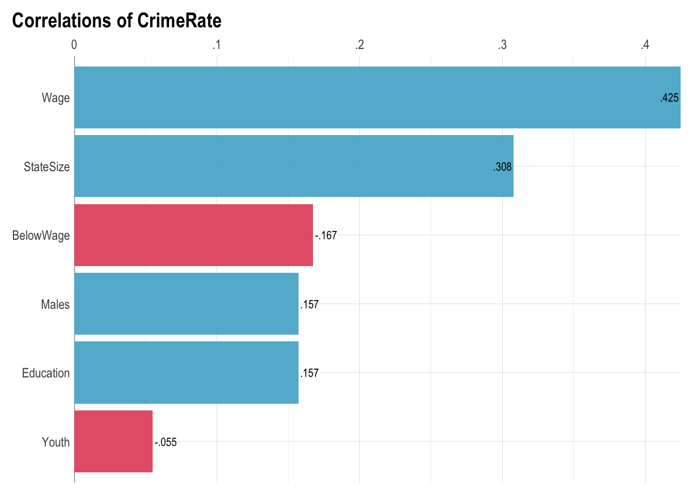

library(tidyverse)
# install.packages("corrplot")
# install.packages("lares")
library(corrplot)
library(lares)
# Load datasets
# Adjust paths to match your project structure
icecream <- read_csv("../assets/data/ice_cream.csv")
crime <- read_csv("../assets/data/crime.csv")Correlation in R
This page walks through several ways of working with correlations in R, using two small teaching datasets:
- an ice-cream experiment (puzzle vs. video game scores)
- a US crime dataset (crime rate, demographics, wages, etc.)
The goal is not only to compute a single cor() value, but to learn how to:
- compute Pearson, Spearman, and Kendall correlations,
- test correlations with
cor.test(), - compute correlations separately by groups,
- explore larger sets of variables with correlation matrices and helper functions.
Setup
1. Ice-cream experiment: basic correlations
In this dataset, participants completed:
- a puzzle task (
puzzle), and
- a video game task (
video).
We start with the simplest question:
How strongly are puzzle scores and video game scores related?
1.1 Pearson correlation
cor(icecream$puzzle, icecream$video)[1] 0.465106You can also use the formula interface with with():
with(icecream, cor(puzzle, video))[1] 0.4651061.2 Visualising the relationship
Base R plot version (quick and simple):
plot(
icecream$puzzle, icecream$video,
main = "Correlation between puzzle score\nand video game score",
xlab = "Puzzle score",
ylab = "Video game score",
sub = paste0("r = ", round(cor(icecream$puzzle, icecream$video), 2))
)
Bonus task: Recreate this plot using ggplot2 instead of base R.
1.3 Non-parametric correlations
Sometimes variables are not normally distributed or contain outliers. Two common rank-based alternatives are:
- Spearman’s rho
- Kendall’s tau
# Spearman's rank correlation
cor(icecream$puzzle, icecream$video, method = "spearman")[1] 0.4807849# Kendall's tau
cor(icecream$puzzle, icecream$video, method = "kendall")[1] 0.3657759Reflection prompt:
Compare the Pearson, Spearman, and Kendall coefficients.
Are they similar, or do ranks tell a different story?
2. Crime data: correlation matrices and tests
The crime dataset contains several numeric variables such as:
CrimeRate– crime per population
Males– number of males in the labour force
Wage– average wage
StateSize– size of the state, and many others.
2.1 Simple correlation matrix
We can compute a correlation matrix for a small subset of variables:
crime %>%
select(CrimeRate, Males, Wage) %>%
cor() CrimeRate Males Wage
CrimeRate 1.0000000 0.1571129 0.4248530
Males 0.1571129 1.0000000 0.1796086
Wage 0.4248530 0.1796086 1.0000000Rounded for nicer printing:
crime %>%
select(CrimeRate, Males, Wage) %>%
cor() %>%
round(2) CrimeRate Males Wage
CrimeRate 1.00 0.16 0.42
Males 0.16 1.00 0.18
Wage 0.42 0.18 1.002.2 Pairwise scatterplots
A quick way to visualise all pairwise relationships is pairs():
crime %>%
select(CrimeRate, Males, Wage) %>%
pairs()
Bonus task: Which pairs look most linear and which look weak or non-linear?
2.3 Testing correlations: cor.test()
cor() only gives you the coefficient.
Use cor.test() when you want a hypothesis test and a confidence interval.
# Test correlation between Males and Wage
cor.test(crime$Males, crime$Wage)
Pearson's product-moment correlation
data: crime$Males and crime$Wage
t = 1.2248, df = 45, p-value = 0.227
alternative hypothesis: true correlation is not equal to 0
95 percent confidence interval:
-0.1134075 0.4438811
sample estimates:
cor
0.1796086 # Test correlation between Males and CrimeRate
cor.test(crime$Males, crime$CrimeRate)
Pearson's product-moment correlation
data: crime$Males and crime$CrimeRate
t = 1.0672, df = 45, p-value = 0.2916
alternative hypothesis: true correlation is not equal to 0
95 percent confidence interval:
-0.1361989 0.4251002
sample estimates:
cor
0.1571129 3. Correlations by group
Sometimes you do not just want “one correlation for everybody”, but separate correlations within subgroups.
In the crime data, variable MoreMales indicates whether the state has a particularly high number of males.
3.1 Grouped correlation (summarise version)
Here we compute the correlation between StateSize and Education separately for each value of MoreMales:
crime %>%
select(CrimeRate, StateSize, Education, Wage, MoreMales) %>%
group_by(MoreMales) %>%
summarise(
cor_StateSize_Education = cor(StateSize, Education, use = "complete.obs")
)# A tibble: 2 × 2
MoreMales cor_StateSize_Education
<dbl> <dbl>
1 0 0.0210
2 1 0.0135This approach is:
- readable,
- uses only
dplyr,
- easy to adapt to other variable pairs.
3.2 Grouped correlation (nested + purrr version)
The same idea, but written in a more functional style:
library(purrr)
library(broom)
crime %>%
select(CrimeRate, StateSize, Education, Wage, MoreMales) %>%
group_by(MoreMales) %>%
nest() %>%
mutate(
cor_test = map(
data,
~ cor.test(.x$StateSize, .x$Education, use = "complete.obs")
),
tidy_result = map(cor_test, broom::tidy)
) %>%
select(MoreMales, tidy_result) %>%
unnest(tidy_result)# A tibble: 2 × 9
# Groups: MoreMales [2]
MoreMales estimate statistic p.value parameter conf.low conf.high method
<dbl> <dbl> <dbl> <dbl> <int> <dbl> <dbl> <chr>
1 0 0.0210 0.126 0.900 36 -0.301 0.338 Pearson's p…
2 1 0.0135 0.0357 0.973 7 -0.657 0.672 Pearson's p…
# ℹ 1 more variable: alternative <chr>nest()creates a small tibble for each group in columndata.
map_dbl()appliescor()inside each small dataset.
This pattern is a gentle introduction to the “split–apply–combine” idea using nested data frames.
4. Visualising correlations in larger sets of variables
4.1 Correlation heatmap with corrplot
For many variables, a correlation matrix is easier to read as a heatmap.
The next block:
- Keeps only numeric variables.
- Drops variables with missing values or zero variance.
- Randomly picks 10 numeric variables (just for demo).
- Computes a correlation matrix.
- Plots it with
corrplot()and hierarchical clustering.
set.seed(123) # for reproducible sampling of columns
crime %>%
select_if(is.numeric) %>% # keep only numeric variables
select_if(~ !any(is.na(.))) %>% # drop variables with any missing values
select_if(~ sd(.) != 0) %>% # drop variables with zero variance
select(sample(names(.), size = 10)) %>%
cor(use = "complete.obs") %>% # row-wise removal of missing values
corrplot::corrplot(order = "hclust") # cluster similar variables
Bonus task: Choose your own subset of variables and interpret at least three interesting pairs.
4.2 “Smart” correlation helpers from lares
The lares package provides convenience functions for quickly exploring correlations in a dataset.
4.2.2 Correlations with a selected variable
You can also focus on correlations with one target variable, for example CrimeRate:
crime %>%
select(CrimeRate, Youth, Education, Males, StateSize, Wage, BelowWage) %>%
lares::corr_var(var = CrimeRate, top = 15)